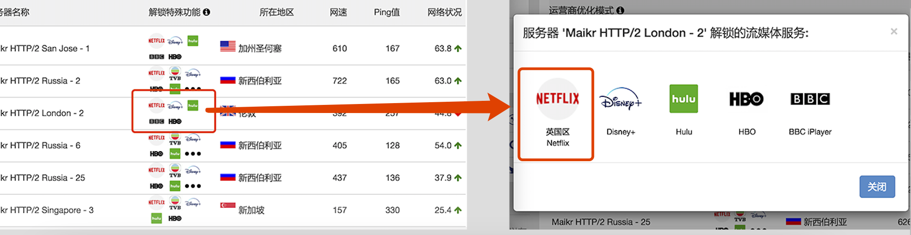
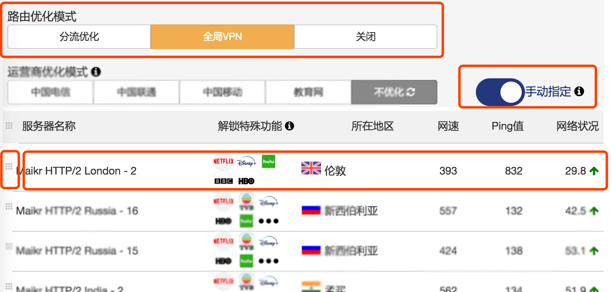

{{"app" | translate}}
解锁流媒体使用简介
想在线观看全世界各主要流媒体网站的视频和直播？
Netflix, Hulu, HBO, 日本动漫，TVB，台湾動畫瘋...
{{"app" | translate}}已经为你解锁，马上开始？
第一步，查看哪些服务器支持你所想观看的流媒体服务(点击服务器列表上的左图红色区域出现右图界面)

第二步，手动选择该服务器
1）选择全局VPN模式(对所有域名和IP使用{{"app" | translate}}服务器连接)
2）选择手动模式(下面服务器列表左边会出现小图标，表示服务器列表顺序可以进行拖动)
3）将目标服务器拖动到服务器列表第一位(手动模式时，只有第一个服务器被启用，其他备用)

是不是很简单呢？
谢谢耐心观看。我们还在不断改进。让我们一起做的更好。